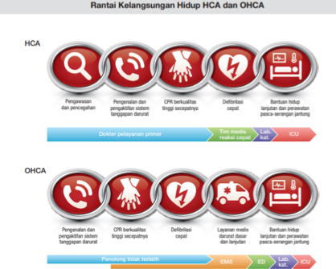
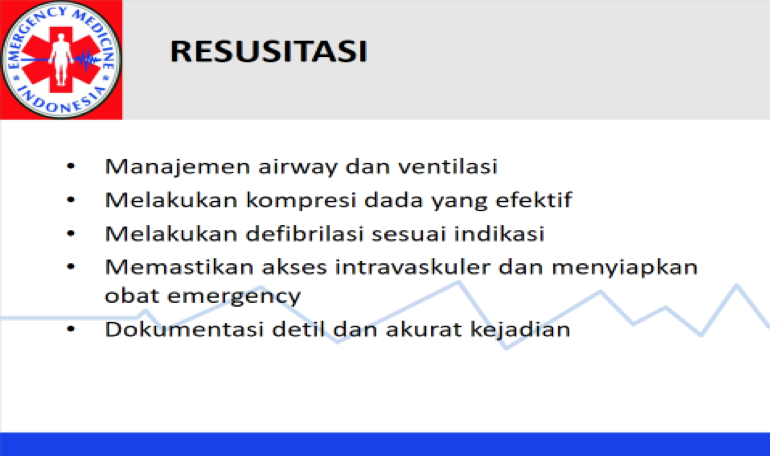
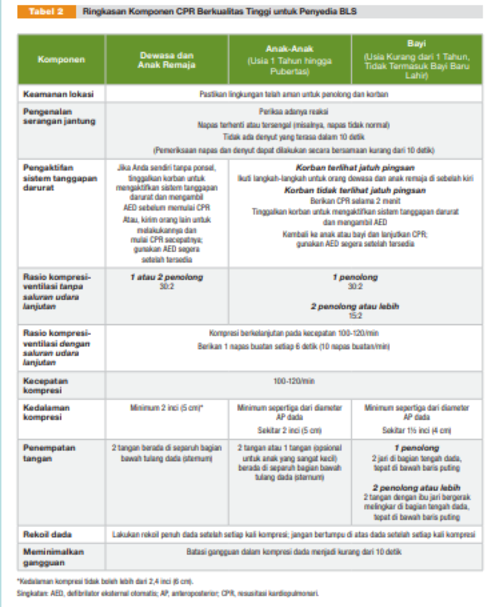

1.Serangan jantung mendadak :
Langkah – langkah:
Berikut adalah langkah langkah resusitasi :

Kondisi khusus untuk penolong perawat atau dokter ambulan :
-A (airway) : open airway jika diperlukan dilakukan intubasi tetapi hatus oleh tenaga terlatih.
-B (breathing) : pre intubasi 30:2 jika sudah terpasang intubasi dan bagging sudah dipakai maka 8-10 hembusan /menit
-C (circulation) bisa IV/IO/centrall line akses seperti CVC
-obat obatan yang disiapkan : adrenalin 1 mg tiap 3-5 menit